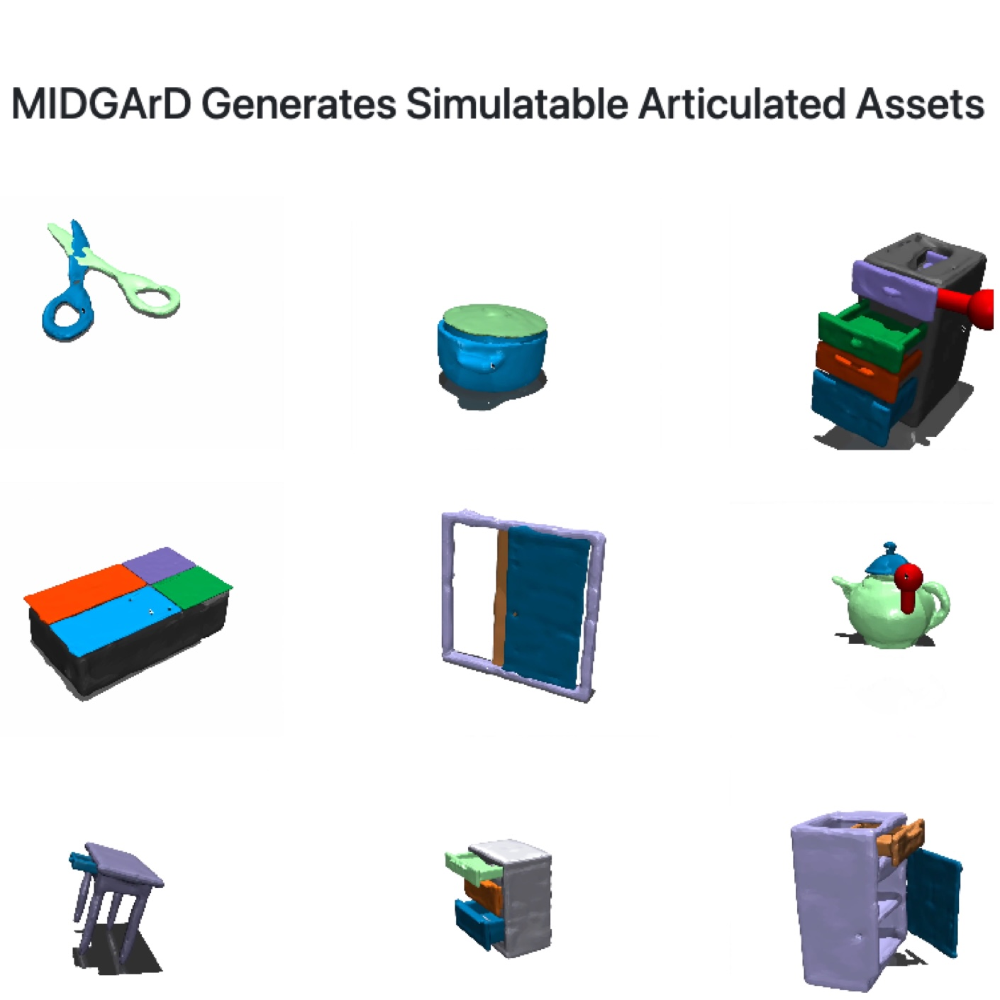
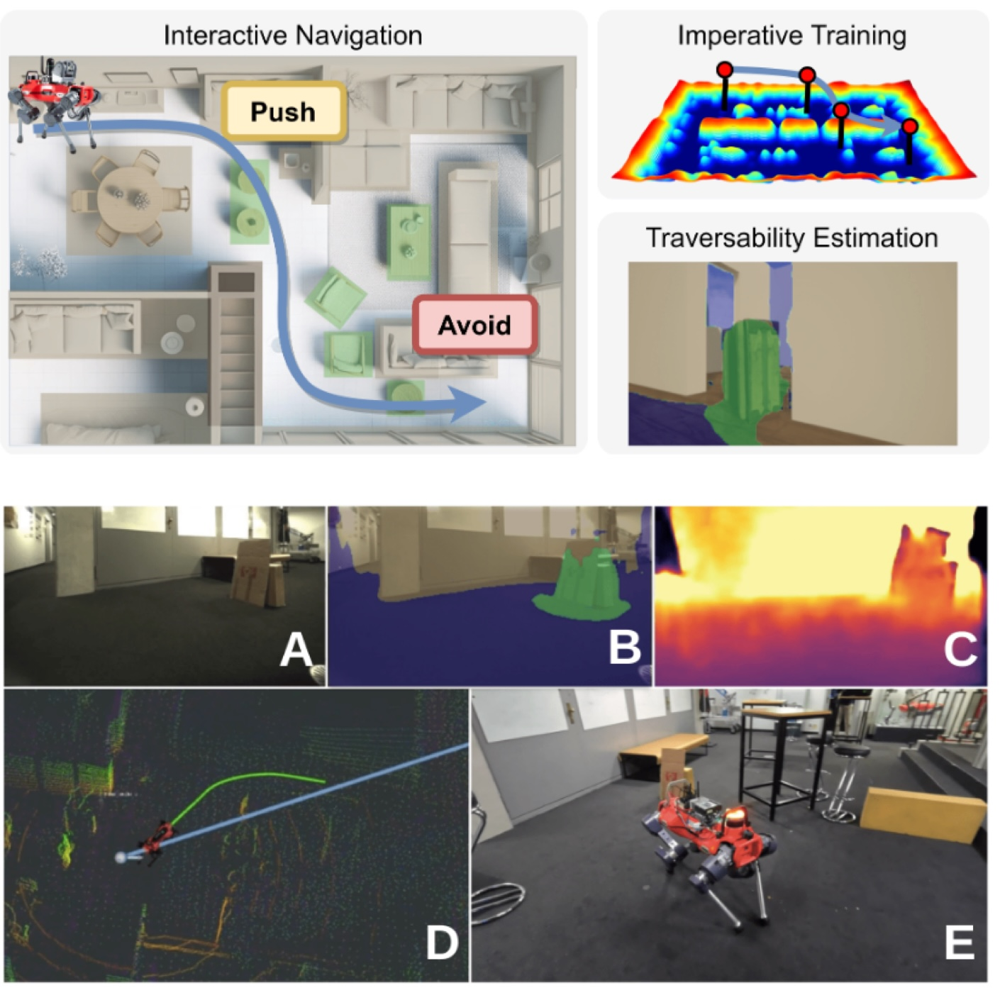
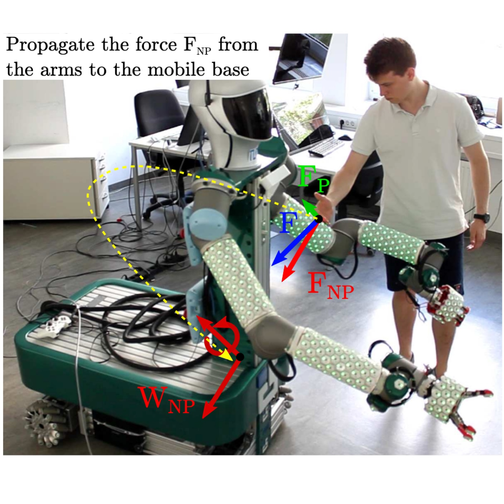

Research
I'm interested in generative AI, deep learning, agentic AI, and robotics. My PhD research focused on Robot
Control, Tactile feedback, State Estimation and Inertial Parameters Identification.
|
|

|
MIDGArD: Modular Interpretable Diffusion over Graphs for Articulated
Designs
Quentin Leboutet,
Nina Wiedemann,
Zhipeng Cai,
Michael Paulitsch,
Kai Yuan.
NeurIPS, 2024
Project page
/
Paper
/
Code
MIDGArD is a modular diffusion framework that generates articulated 3D assets with enhanced
controllability, enabling seamless integration into physics engines for advanced digital content and
robotics applications.
|
|

|
In-Sight: Interactive Navigation through Sight
Philipp Schoch,
Fan Yang,
Yuntao Ma,
Stefan Leutenegger,
Marco Hutter,
Quentin Leboutet.
IEEE IROS, 2024
Paper
/
Video
IN-Sight is a self-supervised navigation system that supports interaction with obstacles using RGB-D
data, enabling robots such as ANYmal to seamlessly navigate complex real-world environments.
|
|
|
OpenBot-Fleet: A System for Collective Learning with Real Robots
Matthias Müller,
Samarth Brahmbhatt,
Ankur Deka,
Quentin Leboutet,
David Hafner,
Vladlen Koltun.
IEEE ICRA, 2024
Paper
/
Video
/
Supplementary
Material
OpenBot-Fleet is a scalable open-source cloud robotics system that leverages smartphones and
affordable wheeled robots to learn and deploy robust navigation policies across real-world
environments.
|
|
|
Inertial Parameter Identification in Robotics: A Survey
Quentin Leboutet,
Julien Roux,
Alexandre Janot,
Julio Rogelio Guadarrama
Olvera,
Gordon Cheng.
Applied Sciences, 2021, Best Paper Award
Paper
/
Code
/
Supplementary Material
/
Data
Introducing BIRDy: an open-source Matlab toolbox that benchmarks 17 cutting-edge inertial parameter
identification methods, enabling precise robot dynamics analysis for both simulated and real-world
manipulators.
|
|
|
Second-order Kinematics for Floating-Base Robots using the Redundant
Acceleration Feedback of an Artificial Sensory Skin
Quentin Leboutet,
Julio Rogelio Guadarrama
Olvera,
Florian Bergner,
Gordon Cheng.
IEEE ICRA, 2020
Paper
A second-order kinematics estimation method that utilizes distributed inertial feedback and
self-calibrating artificial skin to measure joint motions in humanoid robots, alleviating noise and
lag issues.
|
|
|
Online Configuration Selection for Redundant Arrays of Inertial Sensors:
Application to Robotic Systems Covered with a Multimodal Artificial Skin
Quentin Leboutet,
Florian Bergner,
Gordon Cheng.
IEEE IROS, 2020
Paper
An adaptive sensor-selection algorithm that dynamically optimizes inertial sensor usage on robots
in real-time, enhancing scalability and robustness for high-order motion estimation in dynamic
control applications.
|
|
|
A Comprehensive Realization of Robot Skin: Sensors, Sensing, Control, and
Applications
Gordon Cheng,
Emmanuel Carlos Dean
León,
Florian Bergner,
Julio Rogelio Guadarrama
Olvera,
Quentin Leboutet,
Philipp Mittendorfer.
Proceedings of the IEEE, 2019
Paper
A holistic approach to engineer the artificial skin for robots with an example of a multimodal skin
cell showing multiple humanlike sensing modalities.
|
|
|
Tactile-Based Whole-Body Compliance with Force Propagation for Mobile
Manipulators
Quentin Leboutet,
Emmanuel Carlos Dean
León,
Florian Bergner,
Gordon Cheng.
IEEE TRO, 2019
Paper
/
Video
A quadratic programming-based tactile control framework that equips mobile robots with whole-body
compliance through adaptive artificial skin, enabling robust and adjustable responses to
multi-contact environmental interactions.
|
|

|
Tactile-Based Compliance with Hierarchical Force Propagation for
Omnidirectional Mobile Manipulators
Quentin Leboutet,
Emmanuel Carlos Dean
León,
Gordon Cheng.
IEEE Humanoids, 2016
Paper
/
Video
A quadratic programming-based framework that empowers omnidirectional mobile robots with whole-body
compliance, utilizing artificial skin's tactile feedback to enable robust and prioritized
interactions with complex environments.
|
Credits to Jon Barron for the
website source code and Leonid Keselman for the Jekyll import.
|
|
{kind=link}